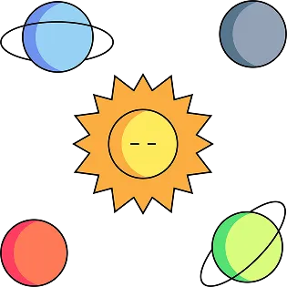
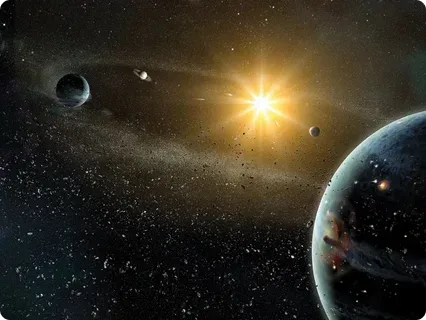
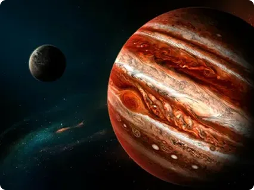
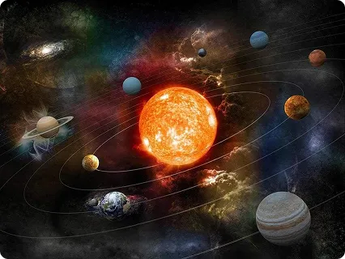

Привет, земля!
Земля - третья планета от Солнца, обладающая уникальными условиями для жизни, включая воду, атмосферу и разнообразие климатических зон, что делает её уникальным миром, населённым разнообразными формами жизни.
Луна
Луна - естественный спутник Земли, единственное место в космосе, где человечество когда-либо приземлялось, исследование которого помогает понять историю развития Солнечной системы и перспективы колонизации космоса.
Солнце
Солнце - звезда в центре Солнечной системы, источник света и тепла для Земли, состоящая в основном из водорода и гелия, и представляющая собой огромный ядерный реактор, в котором происходят термоядерные реакции.
Марс
Марс - четвёртая планета от Солнца, представляет интерес для исследования из-за своих сходств с Землёй и возможности наличия жизни. На его поверхности обнаружены следы воды и вулканическая активность, что делает его потенциально обитаемым местом для будущих миссий и исследований.
Планеты по отдаленности от Солнца
- Меркурий
- Венера
- Земля
- Марс
- Юпитер
- Сатурн
- Уран
- Нептун

Солнечная система - это невероятно удивительное и сложное образование, состоящее из Солнца, планет, их спутников, астероидов, комет и других космических объектов, которые вращаются вокруг Солнца.
Фотографии солнечной системы


